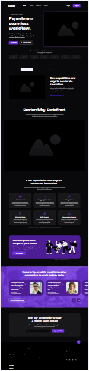
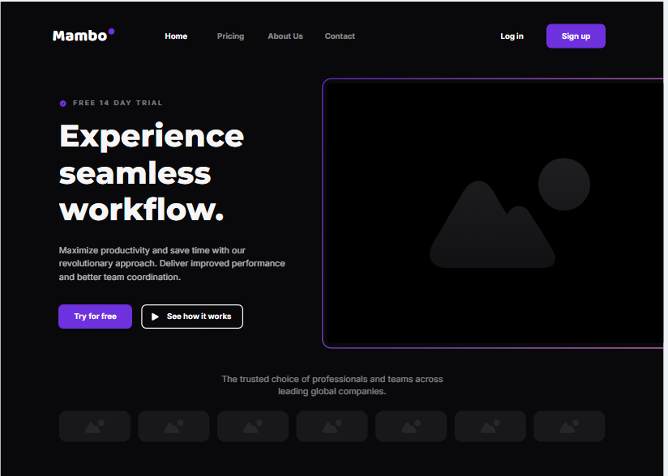

Bay Area eBiking Club - Site Plan
Site Name
Bay Area eBiking Club — This name represents a club that is focused on electric biking in the San Francisco Bay Area. It’s clear, location-based, and invites community members who share this interest.
Site Purpose
The purpose of this site is to provide a central hub for e-bike enthusiasts in the Bay Area. The site will include trail recommendations, event announcements, e-bike reviews, club membership information, and contact details for the club directors.
Scenarios
- What is the best e-bike to get for mountainous trails around San Francisco?
- Where can I find upcoming events and how do I join the club?
Color Schema
- #1E293B - Dark Blue (used for headings and primary text)
- #38BDF8 - Sky Blue (used for accents, buttons, and section highlights)
- #F0F9FF - Light Blue Background (used for page background)
Typography
- Montserrat - Used for headings and navigation.
- Roboto - Used for body content and paragraphs.
Wireframe
Mobile View
>
Desktop View
